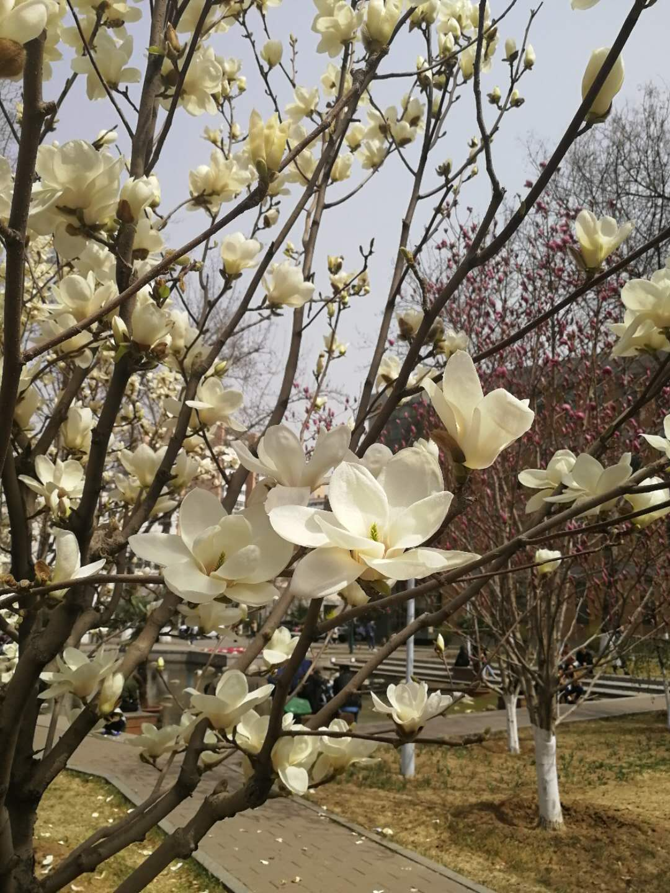
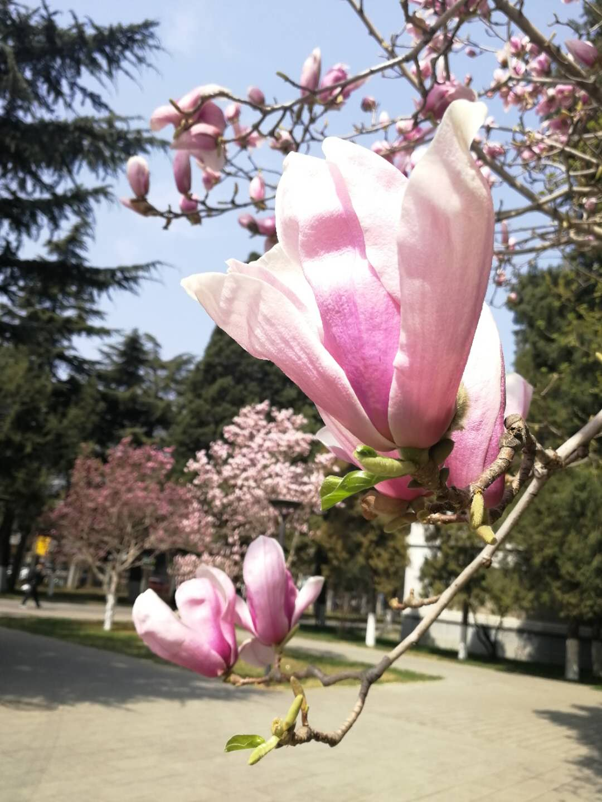

<h1><center>玉兰</center></h1>
<p><center>

    </center></p>
    <p><center>

    </center></p>
<p><center>
玉兰花属木兰科落叶乔木，是观花树木，具有很高的观赏性。花色有白色和淡紫红色，花形大，花冠呈杯形，芳香，先叶后花。</center></p>
   <center><p>玉兰花花期短，只有10天左右，开花时花瓣外展，白光耀眼，是美化庭院的理想之选。北外的小碧池、英院楼前、主楼楼前，都能看到它们的身影。
    </center></p>
    <body bgcolor="#F0FFFF">